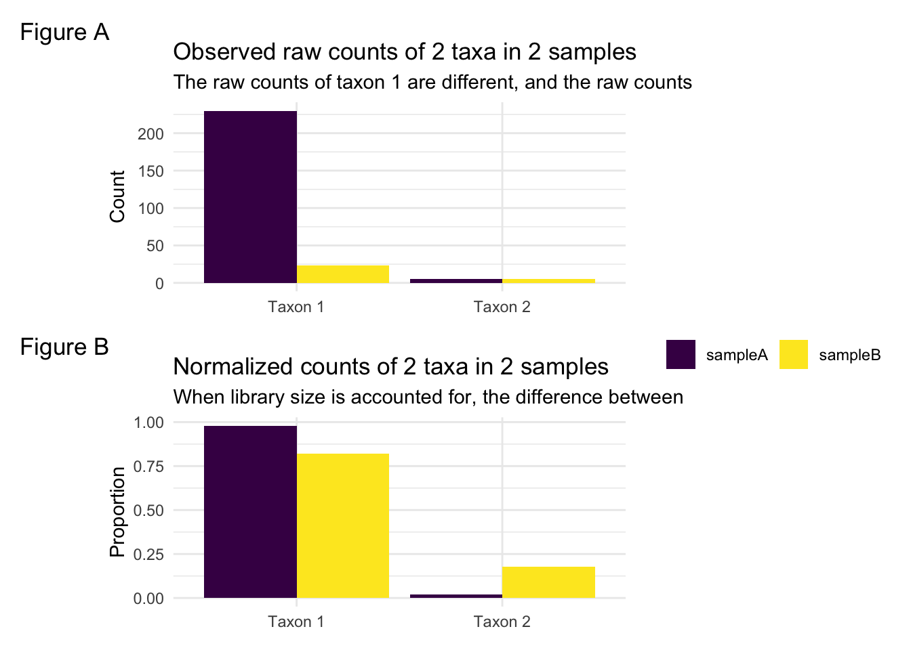
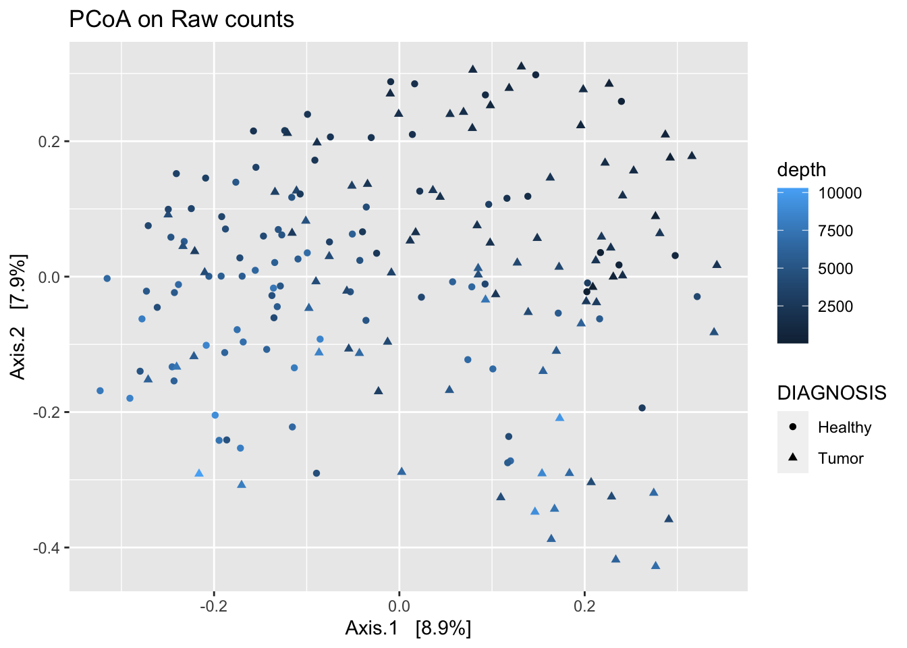

Tutorial on Normalization of Microbiome Data
Chapter 1 Introduction
1.1 The importance of normalization
Microbiome data must be normalized before any statistical analysis can be performed. Following the process of sequencing and assigning raw reads into counts per observed and classified identified taxa classes/OTUs/ASVs, microbiome data consist of a matrix of read counts, referred to as a feature table of raw counts. Normalization is the process of transforming raw read count data into data that can be compared between samples. Statistical analysis on this count matrix is then performed depending on the goal of the experiment. Common analysis goals include community-level analysis (alpha/beta diversity), differential abundance testing (the parallel of differential expression testing in gene expression studies), and network analysis.
Analysis of composition, differences, connections, etc., should be done based only on true biological aspects. However, technical variation in counts across samples is a given hurdle that must be accounted for. Biases can arise in the sequencing process, sample preparation, contamination, preferential amplification, and can manifest in differences in sparsity and unequal sequencing depths (Salter et al. 2014). An effective normalization strategy should put all samples on equal footing so interpretations are on biological signals, not technical signals such as sequencing depth. Currently, there is no known ‘best’ normalization method that removes all technical artifacts leaving only biological signals.
Due to the sequencing technology, samples will have different sequencing depths, or the sum of all the counts in a sample. Directly comparing raw counts between samples is not possible. To illustrate this, consider the counts of Taxon 1, across two samples shown below. In Sample A, this taxon has a count of 230, and in Sample B, this taxon has a count of 23. Is this taxon differentially abundant between samples? As we see below, the way we normalize the data can change how we would answer this question.
| Taxa | Sample A | Sample B |
|---|---|---|
| Taxon 1 | 230 | 23 |
| Taxon 2 | 5 | 5 |

One goal for normalization of microbiome data is the standardization of sequencing depth across samples. One common approach to this is a scaling-based approach, where a scaling factor is calculated for every sample and the counts for each taxon are divided by the scaling factor for that sample. Figure B shows the same data as Figure A, but where each sample has been transformed into proportions by dividing by the total counts for each sample. The difference in Taxon 1 between samples appears much smaller. However, now there appears to be a difference in Taxon 2, even though the counts were originally the same. This is because in sample B, Taxon 1 consists of a higher proportion of the total count than in sample A.
This demonstrates the importance of normalization, but also the artifacts that can occur depending on the method.
1.2 The compositional nature of microbiome data
Microbiome data are inherently compositional. The counts of the collection of taxa that make up each sample are constrained by the total sum, or sequencing depth for that sample. This means that the count of each sampled taxon is a portion of a larger whole. Each observed taxon is not independent. As we saw in the above example, before normalization, Taxon 2 was equal between samples. After converting to proportions, Taxon 2 no longer appears equal. If there is a difference between two samples it is unclear if that difference is because of a true difference in that taxon or if that taxon is changing because of differences in another taxon. Numerous traditional statistical methods rely on an independence assumption, which is not met with microbiome data. This can lead to spurious correlations that exist only because of the compositional nature and not any true signal.
With library size as the sum constraint for each sample, if we know in a biological system that after an event occurs (treatment), the red taxon decreases, this will change the composition of the sampled blue taxon regardless of its change or lack thereof in the underlying population.

Consider again two samples consisting of red and blue points. We can think of the samples as before and after treatment. In the second plot, the number of red dots in the population and in the observed sample has decreased, but the blue remains the same.
| Sample | blue | red |
|---|---|---|
| Before | 10 | 20 |
| After | 10 | 4 |
| Sample | blue | red |
|---|---|---|
| Before | 0.2857143 | 0.6666667 |
| After | 0.7142857 | 0.3333333 |
This observed increase in the proportion of blue is due to the compositional nature of the sampled points, and not any true difference in the blue population.
References
Salter, Susannah J., Michael J. Cox, Elena M. Turek, Szymon T. Calus, William O. Cookson, Miriam F. Moffatt, Paul Turner, Julian Parkhill, Nicholas J. Loman, and Alan W. Walker. 2014. “Reagent and Laboratory Contamination Can Critically Impact Sequence-Based Microbiome Analyses.” BMC Biology 12 (1): 87. https://doi.org/10.1186/s12915-014-0087-z.